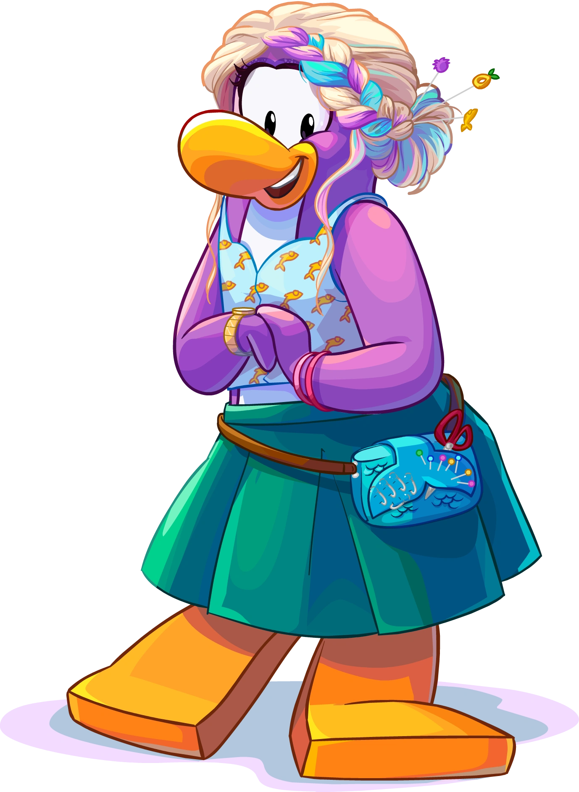

Pinguinando
Personagens

Dot
Agente da EPF de noite e estilista de dia. Como a própria personagem afirma, Dot é uma mestre dos disfarces: “Os Pinguins me chamam de Mestre dos Disfarces por uma razão!”. Apesar da personalidade simpática e alto astral, Dot é uma líder nata que leva seu trabalho a sério e não suporta atrasos, pendências ou pinguins que atrapalhem seu momento de criação.